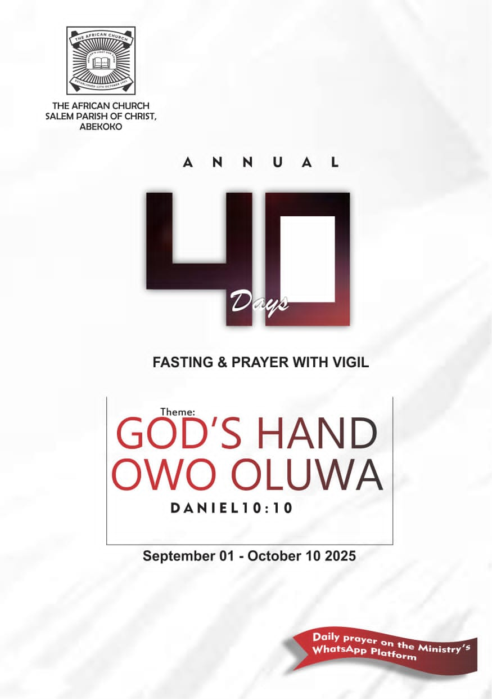

Welcome to Our Church Family
(One Big Family)
Join us for worship, fellowship, and spiritual growth in the heart of Agege, Lagos
Special Program Alert!

🙏 40 Days Fasting and Prayer
📅 Starting: September 1st, 2025
🎯 Theme: "God's Hand" (Owo Oluwa)
Join us for a powerful 40-day journey of fasting, prayer, and spiritual breakthrough. Experience the mighty hand of God working in your life!
- Daily Prayer Sessions
- Bible Study & Meditation
- Spiritual Breakthrough
- Community Fellowship
✨ "The hand of our God is upon all those who seek Him for good" - Ezra 8:22 ✨
This Sunday's Service
Latest Announcements
Weekly Services
- Gethsemane (ONA-ABAYO) - Wednesday 7am
- Bible Study - Tuesday 5pm
- Choir Rehearsal - Thursday & Friday 5pm
Monthly Events
- O TO GE - Every Thursday @ Cathedral Salem
- Night Vigil - Last Friday of Month
- Holy Communion - First Sunday
Meet Our Leadership

Our spiritual leader providing pastoral care and guidance to our church family with wisdom and love.
📞 For Prayer & Counselling:
WhatsApp: +234 906 275 9260
Dedicated to serving the congregation and ensuring the spiritual welfare of our church family.

Supporting pastoral duties and coordinating church activities with dedication and organizational skills.
Prayer Points for the Week
- Monday: Pray for wisdom and guidance for our church leadership
- Tuesday: Intercede for the sick and those in need of healing
- Wednesday: Pray for unity and love within our church family
Food for Thought
"This is the day the Lord has made; let us rejoice and be glad in it."
Every day is a gift from God. Let us approach each day with gratitude, joy, and expectation of His goodness in our lives.
Submit Prayer Request